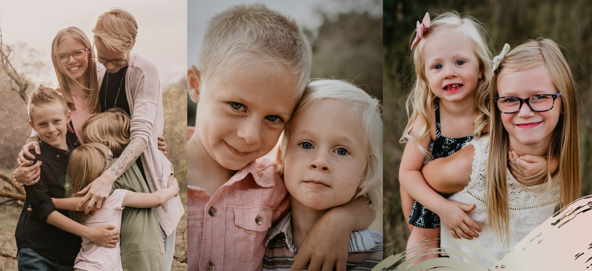
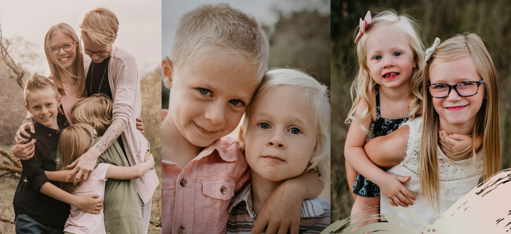

- I will give my children the best chance at life.
- I will have a home of my own.
- I will have financial independence.
- I will nurture my inner child.
- I will have a healthy relationship.
- I will celebrate myself.
- I will have a flock of chickens named after Pokemon again.
- I will use my neurodivergent brain for good.
- I will inspire others to do the same.
"Your new life is going to cost you your old one. It’s going to cost you your comfort zone
and your sense of direction. It’s going to cost you relationships and friends.
It’s going to cost you being liked and understood.
It doesn’t matter.
The people who are meant for you are going to meet you on the other side.
You’re going to build a new comfort zone around the things that actually move you forward.
Instead of being liked, you’re going to be loved. Instead of being understood, you’re going to be seen.
All you’re going to lose is what was built for a person you no longer are.
Remaining attached to your old life is the first and final act of self-sabotage,
and releasing it is what we must prepare for to truly be willing to see real change."
-Brianna Wiest